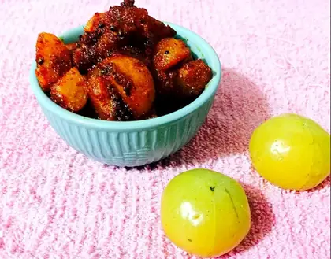

Chutneys, pickles & raitas · Popular in Northern plains and West coast and Deccan
Amla pickle
Amla pickle is made with wild amla, a favourite in Northern plains and West coast and Deccan.

How do you make amla pickle?
Steamed amla in mustard oil with fenugreek, mustard and chilli.
Wild ingredients
- Amla (Phyllanthus emblica): in season November to February
Watch the recipe

Video: Gita's Kitchen on YouTube